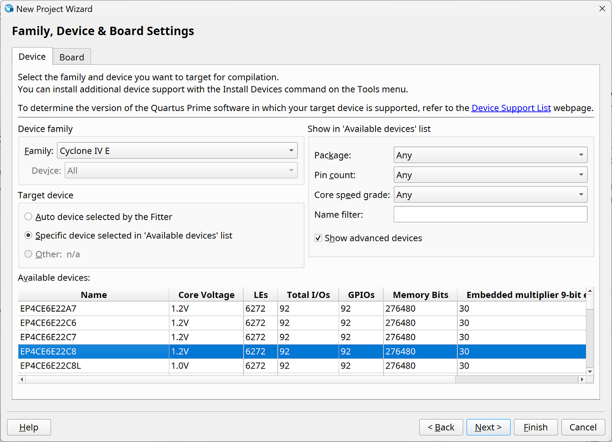

Getting Started with the Low-Cost Cyclone IV EP4CE6E22C8N FPGA Board#
Keywords: Altera Cyclone IV FPGA, Quartus Prime Lite, EP4CE6E22C8N, VHDL Example
▷ Cyclone IV FPGA#
In March 2024, Intel (formerly Altera) announced the extension of the lifecycle for its legacy FPGA product lines, including the Cyclone IV series, through the year 2040. This extended support ensures continued availability of Cyclone IV FPGA devices, making them a practical and cost-effective choice for educational purposes and FPGA design learning. In addition, a variety of low-cost Cyclone IV FPGA boards manufactured in China are readily available on the market.
Figure: Intel/Altera FPGA Longevity Extended to 2040 (Source: Intel)
This blog provides a short tutorial on experimenting with a low-cost Cyclone IV (E-Series) FPGA board. VHDL source code is provided and intended for use with Intel/Altera Quartus Prime Lite (v24.x).
Figure: Intel/Altera Cyclone IV EP4CE6E22C8N FPGA Board

Figure: Device Selection in Quartus Prime Lite
▷ FPGA Board Information#
The FPGA development board used in this project integrates a mid-range Altera Cyclone IV device, basic peripheral interfaces, on-board storage, and power regulation circuits. The following list summarizes the key hardware specifications and pin assignments.
- FPGA: EP4CE6E22C8N
- Logic Elements (LEs): 6,272
- PLLs: 2
- Embedded Memory: 276,480 bits
- I/Os: 91
- Package: 144-LQFP
- USB-to-Serial Interface: CH340
- FPGA TX pin: PIN_10
- FPGA RX pin: PIN_23
- Clock Sources
- 50 MHz: PIN_24, PIN_25
- 27 MHz: PIN_90, PIN_91
- Push Buttons (Active-Low with Pull-Ups)
- FPGA Reset: PIN_88
- 4x User Buttons [3:0]: PIN_73, PIN_80, PIN_89, PIN_114
- LEDs (Active-Low)
- 5x LEDs [4:0]: PIN_1, PIN_2, PIN_3, PIN_7, PIN_11
- On-Board Storage
- Altera EPCS4N (Serial Configuration Device)
- Winbond 25Q64JVSIQ (64 Mbit / 8 MB Serial NOR Flash)
- Power Supply
- +5V via USB Type-C connector
- 4x AMS1117 LDO voltage regulators: +3.3 V, +2.5 V, +1.8 V, and +1.2 V outputs
- Bitstream Programming
- via a JTAG socket for USB Blaster

Figure: JTAG Socket for USB Blaster and Jumper settings for I/O Bank Voltages
▷ FPGA Demo Code#
The provided FPGA design demonstrates how to use the onboard 50 MHz clock input, the active-low reset button, four user push buttons, and five onboard LEDs. In addition, since the FPGA board includes a CH340 USB-to-serial interface chip, a simple serial transmitter module (baudrate = 115200) is implemented to send a predefined message ("Hello, World!") to the host computer whenever a button is pressed.
------------------------------------------------------------------
LIBRARY ieee;
USE ieee.std_logic_1164.ALL;
USE ieee.numeric_std.ALL;
------------------------------------------------------------------
ENTITY top IS
PORT (
CLK : IN STD_LOGIC; -- 50MHz clock
nRST : IN STD_LOGIC; -- active-low, asynchronous reset
LEDS : OUT STD_LOGIC_VECTOR(4 DOWNTO 0); -- active-low
BUTTONS : IN STD_LOGIC_VECTOR(3 DOWNTO 0); -- active-low
SERIAL_TX : OUT STD_LOGIC;
SERIAL_RX : IN STD_LOGIC
);
END top;
ARCHITECTURE SYNTH OF top IS
CONSTANT BIT_WIDTH : INTEGER := 5;
CONSTANT ALL_ONES : UNSIGNED := TO_UNSIGNED(2**BIT_WIDTH-1,BIT_WIDTH);
CONSTANT COUNT_PERIOD : INTEGER := 10_000_000;
SUBTYPE count_t IS INTEGER RANGE 0 TO (COUNT_PERIOD - 1);
SIGNAL count : count_t := 0;
SIGNAL reg : STD_LOGIC_VECTOR(BIT_WIDTH-1 DOWNTO 0);
SIGNAL shift_en : STD_LOGIC;
-- Define constants
CONSTANT CLK_FREQ : INTEGER := 50e6; -- 50 MHz clock
CONSTANT BAUD_RATE : INTEGER := 115200; -- 115200 baud rate
CONSTANT BAUD_PERIOD : INTEGER := CLK_FREQ / BAUD_RATE - 1;
-- ASCII message to be transmitted
TYPE ascii_array_t IS ARRAY (0 TO 13) OF STD_LOGIC_VECTOR(7 DOWNTO 0);
CONSTANT MESSAGE : ascii_array_t := (
x"48", -- H
x"65", -- e
x"6C", -- l
x"6C", -- l
x"6F", -- o
x"20", -- (space)
x"57", -- W
x"6F", -- o
x"72", -- r
x"6C", -- l
x"64", -- d
x"21", -- !
x"0D", -- \r
x"0A" -- \n
);
-- FSM states
TYPE state_t IS (ST_IDLE, ST_LOAD_DATA, ST_SEND_DATA, ST_STOP, ST_WAIT);
SIGNAL state : state_t := ST_IDLE;
SIGNAL next_state : state_t := ST_IDLE;
SIGNAL wait_counter : INTEGER := 0;
SIGNAL bit_counter : INTEGER RANGE 0 TO 9 := 0;
SIGNAL char_counter : INTEGER RANGE 0 TO MESSAGE'length := 0;
SIGNAL shift_reg : STD_LOGIC_VECTOR(9 DOWNTO 0) := (OTHERS => '1');
SIGNAL btn_capture : STD_LOGIC_VECTOR(1 DOWNTO 0) := (OTHERS => '1');
SIGNAL txd : STD_LOGIC := '1';
BEGIN
SERIAL_TX <= txd;
LEDS <= NOT reg WHEN BUTTONS = "1111" ELSE "10101";
PROCESS (nRST, CLK) BEGIN
IF nRST = '0' THEN
count <= 0;
shift_en <= '0';
ELSIF rising_edge(CLK) THEN
-- check whether the counter reaches the max. value.
IF count = (COUNT_PERIOD - 1) THEN
count <= 0; -- reset the counter.
shift_en <= '1'; -- enable register shift.
ELSE
count <= count + 1; -- increment counter by 1.
shift_en <= '0'; -- disable register shift.
END IF;
END IF;
END PROCESS;
PROCESS (nRST, CLK) BEGIN
IF nRST = '0' THEN
reg <= (OTHERS => '0'); -- clear the shift register.
ELSIF rising_edge(CLK) THEN
IF shift_en = '1' THEN -- register shifting is enabled.
IF reg = STD_LOGIC_VECTOR(ALL_ONES) THEN
-- clear the shift register.
reg <= (OTHERS => '0');
ELSE
-- shift left, insert '1' as LSB.
reg <= reg(reg'left - 1 DOWNTO 0) & '1';
END IF;
END IF;
END IF;
END PROCESS;
PROCESS (CLK, nRST)
BEGIN
IF nRST = '0' THEN
state <= ST_IDLE;
bit_counter <= 0;
wait_counter <= 0;
char_counter <= 0;
btn_capture <= "11";
shift_reg <= (OTHERS => '1');
txd <= '1'; -- TXD idle (high)
ELSIF rising_edge(CLK) THEN
btn_capture <= btn_capture(0) & BUTTONS(0);
CASE state IS
WHEN ST_IDLE =>
TXD <= '1';
IF btn_capture = "01" THEN -- button click
state <= ST_LOAD_DATA;
char_counter <= 0;
END IF;
WHEN ST_LOAD_DATA =>
shift_reg <= '1' & MESSAGE(char_counter) & '0';
state <= ST_SEND_DATA;
bit_counter <= 0;
WHEN ST_SEND_DATA =>
txd <= shift_reg(0); -- LSB bit
shift_reg <= '1' & shift_reg(9 DOWNTO 1); -- Shift data
state <= ST_WAIT;
wait_counter <= BAUD_PERIOD;
IF bit_counter = 9 THEN
next_state <= ST_STOP;
bit_counter <= 0;
ELSE
next_state <= ST_SEND_DATA;
bit_counter <= bit_counter + 1;
END IF;
WHEN ST_STOP =>
txd <= '1';
IF char_counter = MESSAGE'length - 1 THEN
state <= ST_IDLE;
ELSE
char_counter <= char_counter + 1;
state <= ST_LOAD_DATA;
END IF;
WHEN ST_WAIT =>
IF wait_counter = 0 THEN
state <= next_state;
ELSE
wait_counter <= wait_counter - 1;
END IF;
WHEN OTHERS =>
state <= ST_IDLE;
END CASE;
END IF;
END PROCESS;
END SYNTH;
A Tcl script file is also provided to set up the FPGA pin assignments automatically.
#set_global_assignment -name FAMILY "Cyclone IV E"
#set_global_assignment -name DEVICE EP4CE6E22C8
#set_global_assignment -name TOP_LEVEL_ENTITY top
set_location_assignment PIN_24 -to CLK
set_location_assignment PIN_88 -to nRST
set_location_assignment PIN_1 -to LEDS[0]
set_location_assignment PIN_2 -to LEDS[1]
set_location_assignment PIN_3 -to LEDS[2]
set_location_assignment PIN_7 -to LEDS[3]
set_location_assignment PIN_11 -to LEDS[4]
set_location_assignment PIN_73 -to BUTTONS[3]
set_location_assignment PIN_80 -to BUTTONS[2]
set_location_assignment PIN_89 -to BUTTONS[1]
set_location_assignment PIN_114 -to BUTTONS[0]
set_location_assignment PIN_10 -to SERIAL_TX
set_location_assignment PIN_23 -to SERIAL_RX
set_instance_assignment -name IO_STANDARD "3.3-V LVCMOS" -to LEDS[4]
set_instance_assignment -name IO_STANDARD "3.3-V LVCMOS" -to LEDS[3]
set_instance_assignment -name IO_STANDARD "3.3-V LVCMOS" -to LEDS[2]
set_instance_assignment -name IO_STANDARD "3.3-V LVCMOS" -to LEDS[1]
set_instance_assignment -name IO_STANDARD "3.3-V LVCMOS" -to LEDS[0]
set_instance_assignment -name IO_STANDARD "3.3-V LVCMOS" -to BUTTONS[3]
set_instance_assignment -name IO_STANDARD "3.3-V LVCMOS" -to BUTTONS[2]
set_instance_assignment -name IO_STANDARD "3.3-V LVCMOS" -to BUTTONS[1]
set_instance_assignment -name IO_STANDARD "3.3-V LVCMOS" -to BUTTONS[0]
set_instance_assignment -name IO_STANDARD "3.3-V LVCMOS" -to nRST
set_instance_assignment -name IO_STANDARD "3.3-V LVCMOS" -to CLK
set_instance_assignment -name IO_STANDARD "3.3-V LVCMOS" -to SERIAL_TX
set_instance_assignment -name IO_STANDARD "3.3-V LVCMOS" -to SERIAL_RX
To upload the bitstream file (.sof) to the FPGA board, you'll need a USB Blaster (or a compatible clone). Make sure the USB Blaster driver is properly installed on your Windows 10 or 11 system. The USB driver is included with the Quartus Prime software package.
Figure: Device Programming using USB Blaster
▷ Conclusion#
Low-cost FPGA boards, such as the one based on the EP4CE6E22C8N, offer a practical entry point into the world of digital design. They provide just enough logic resources and peripherals to let beginners explore essential concepts — from basic combinational circuits to complete embedded systems.
However, it’s important to understand the trade-offs. Entry-level FPGA boards may have limited memory, fewer I/O pins, or reduced clock speeds compared to their higher-end counterparts. Beginners should also consider factors such as toolchain compatibility, availability of learning resources, and community support when selecting a board. Choosing a platform with good documentation and an active user base often makes the learning process much smoother.
As skills develop, moving to higher-capacity or more advanced FPGA devices opens the door to a wider range of projects — including high-speed signal processing, or custom system-on-chip designs. The foundations built on low-cost boards translate naturally to these larger systems, helping learners grow into confident and capable FPGA developers.
This work is licensed under a Creative Commons Attribution-ShareAlike 4.0 International License.
Created: 2025-10-26 | Last Updated: 2025-10-26